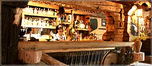

Kuchnia regionalna
Bogacz, Młyńskie jadło z góralską sapką i dania z tradycyjnych przepisów Koła Gospodyń Wiejskich. Na chłodniejsze dni herbata Młyn z łąckowską śliwowicą — tutejsi mówią na nią „herbatka z pyrzem”.
Kamienica, między Gorcami a Beskidem Wyspowym
Karczma urządzona w stylu regionalnym, z barem na prawdziwych kamieniach młyńskich i paleniskiem pośrodku izby. Kuchnia na recepturach Koła Gospodyń Wiejskich.
O nas
Już przy wejściu trzeba przekroczyć wysoki próg, charakterystyczny dla chat góralskich. W środku liczne sprzęty gospodarstwa domowego na tle malowideł ściennych wykonanych przez ludowego artystę.
Do tego miło drażniący zapach dymu jałowca, unoszącego się z kamiennego paleniska pośrodku jednej z izb. Każdy czuje się tu dobrze — nawet koty, które dumnie przechadzają się między gośćmi. Pod strzechą, na prawdziwych kamieniach młyńskich, stoi bar, w którym można dostać nie tylko „żytnióweczkę”.



Czym jesteśmy
Bogacz, Młyńskie jadło z góralską sapką i dania z tradycyjnych przepisów Koła Gospodyń Wiejskich. Na chłodniejsze dni herbata Młyn z łąckowską śliwowicą — tutejsi mówią na nią „herbatka z pyrzem”.
Gramy w soboty od 20:00 do 3:00 — muzyka tradycyjna i regionalna w wykonaniu kapel z Podhala. Zapewniamy też oprawę muzyczną imprez, przede wszystkim wesel.
Noclegi o wysokim standardzie: telewizja satelitarna, internet i łazienka w każdym pokoju.
Okolica
Kamienica leży między pasmem Gorców a Beskidem Wyspowym. Latem i zimą — trasy zjazdowe dla narciarzy i tereny na wypoczynek.